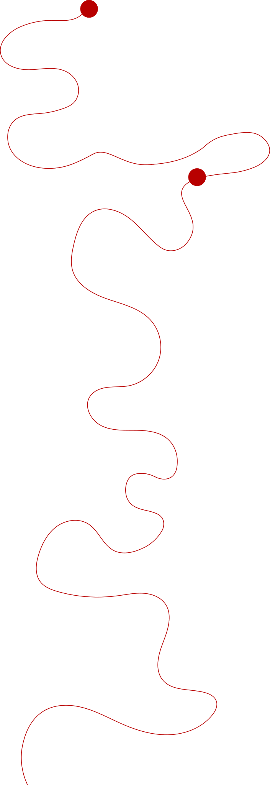

AFBEELDINGEN
Foto homepagina:
https://nl.pinterest.com/pin/826903181631755398/
Foto manifest:
https://nl.pinterest.com/pin/714102084707457100/
fo
Foto’s informatie pagina:
https://nl.pinterest.com/pin/1132585006265837559/1
https://nl.pinterest.com/pin/272186371203174421/
https://nl.pinterest.com/pin/101260691613779323/
https://nl.pinterest.com/pin/255297872596532005/
https://nl.pinterest.com/pin/325314773094706908/
https://nl.pinterest.com/pin/682365781022044684/
https://nl.pinterest.com/pin/146578162842352650/
https://nl.pinterest.com/pin/449374869080054807/
INFORMATIE
Algoritmeregister. (z.d.). Over algoritmes. Overheid.nl. https://algoritmes.overheid.nl/nl/footer/over-algoritmes
The Dare Company. (2025, 7 februari). Hoe bepaalt het social media algoritme wat jij ziet? https://www.thedarecompany.com/over-dare/blog/hoe-bepaalt-het-social-media-algoritme-wat-jij-ziet
De Boer, R. (2025, 18 februari). Hoe werkt het TikTok-algoritme? Be Bricks. https://www.bebricks.nl/blog/hoe-werkt-het-tiktok-algoritme-1/
Digitale balans. (z.d.). Wat is de relatie tussen sociale media en zelfbeeld? Trimbos-instituut. https://digitalebalans.nl/sociale-media/sociale-media-en-welzijn/relatie-tussen-sociale-media-en-zelfbeeld/
Kontentino. (z.d.-a). Social media algoritme. https://www.kontentino.com/nl-BE/social-media-urban-dictionary/social-media-algoritme/
Kontentino. (z.d.-b). Feed-algoritme. https://www.kontentino.com/nl/social-media-urban-dictionary/feed-algoritme/
Nederlands Jeugdinstituut. (z.d.). Omgeving belangrijk voor geluksgevoel jongeren. https://www.nji.nl/actueel/omgeving-belangrijk-voor-geluksgevoel-jongeren
Radar/AVROTROS. (2018). Ruim 60 procent van de jongeren niet mediawijs genoeg. https://radar.avrotros.nl/artikel/ruim-60-procent-van-de-jongeren-niet-mediawijs-genoeg-29984
Radboud Universiteit. (z.d.). Onderzoek naar onze relatie met social media schiet tekort. https://www.ru.nl/diensten/recharge/overzicht/onderzoek-naar-onze-relatie-met-social-media-schiet-tekort
Scientias. (z.d.). Enorm verschil: als jongeren minder social media gebruiken, zijn ze een stuk blijer met zichzelf. https://scientias.nl/enorm-verschil-als-jongeren-minder-social-media-gebruiken-zijn-ze-een-stuk-blijer-met-zichzelf/
Trimbos-instituut. (2025a, 28 mei). Een gezonde relatie met sociale media. https://berthub.eu/tkconv/getraw/2025D21592
Trimbos-instituut. (2025b, 12 december). Brief aan informateur. https://www.trimbos.nl/wp-content/uploads/2025/12/Brief-informateur.pdf
Van Remundt, J. (2025, 8 december). Onrealistisch zelfbeeld door sociale media. IsDatEchtZo? https://www.isdatechtzo.nl/gezondheid/zelfbeeld/
Vrije Universiteit Amsterdam. (2023). De invloed van sociale media op het zelfbeeld van jongeren. https://vu.nl/nl/nieuws/2023/de-invloed-van-sociale-media-op-het-zelfbeeld-van-jongeren